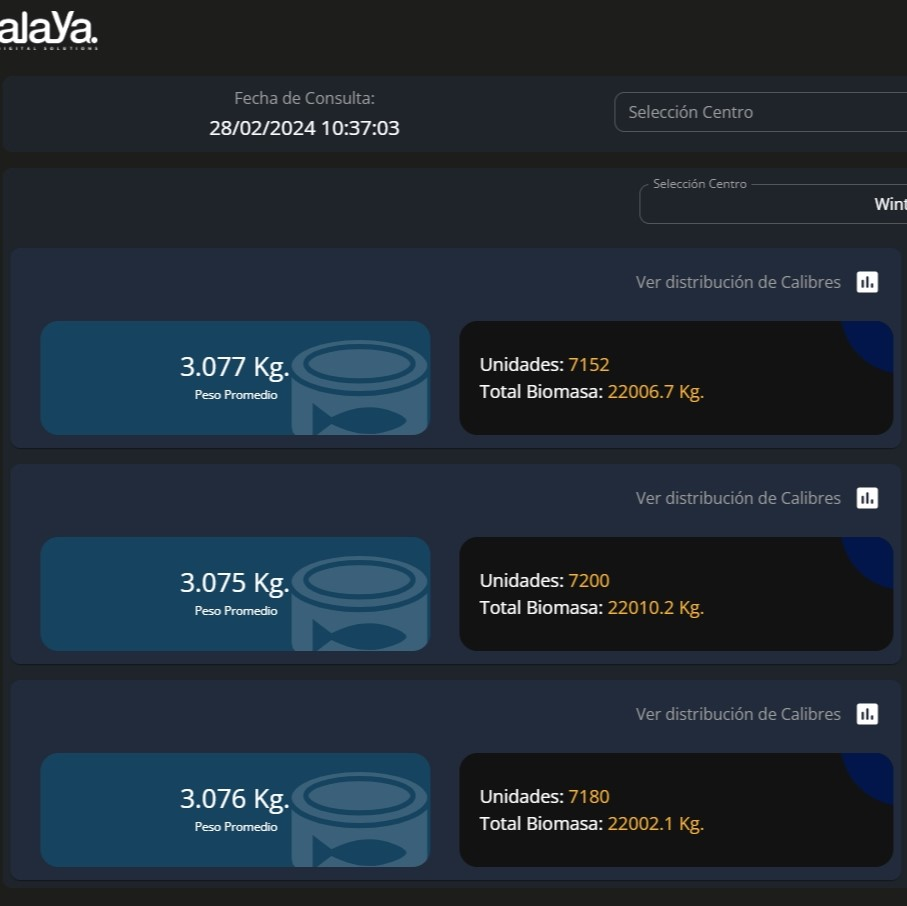

Alaya
Volver al Inicio
Piscicultura
Engorda
Planta de Procesamiento

Determinación dinámica de calibre
Determinación dinámica de calibre en estanques áreas winter, Summer y PostSmolt.
Peso Talla y Factor de Condición
Determinación dinámica de calibre en estanques áreas winter, Summer y PostSmolt.